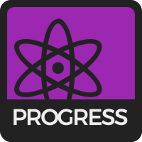
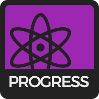

ТИП
ЛОКАЦІЯ
СТАВЛЕННЯ
ЗАЧІПКИ


 

SkeloValues це науково обґрунтований¹ опитувальник, що має на меті графічно відобразити ваші вподобання як скелелаза, за допомогою восьми, на нашу думку, найвизначніших метрик. Ми задамо Вам декілька питань, на кожне з котрих Ви зможете вказати своє ставлення в межах від Абcолютно погоджуюсь до Абсолютно не погоджуюсь. Кожна відповідь матиме певний вплив на кінцеве значення Ваших метрик. Наприкінці опитувальника, ми порівняємо Ваші відповіді з максимальним можливим значенням у кожній з категорій, таким чином перетворивши їх у відсотки. Відповідайте чесно!
Усього питань в опитувальнику: .
Є чотири незалежні осі - Тип, Локація, Ставлення і Зачіпки - і кожна має два протилежні значення на кожному кінці. Ось вони:
БОЛДЕР
Ті, хто має високе значення показника БОЛДЕР надають перевагу лазінню без мотузки та системи, і використовують як страховку лише крешпади та руки (і тіла) їхніх вірних болдер-бро. Їм подобаються складні маршрути з невеликою кількістю ключових моментів, біні та велетенські магнезниці.
ТИП
МОТУЗКА
Ті, хто має високе значення показника МОТУЗКА люблять висоту та довгі маршрути. Їм до вподоби стратегічне планування кожного проміжку маршруту, вони знають де відпочивати а де рухатися швидко та точно.
ЗАЛ
Ті, хто має високе значення показника ЗАЛ обожюнюють кольорові зачіпки, постійну музику та комфорт залу. Їм подобаються тематичні маршрути, часті перекрути та можливість лазити не залежно від погоди.
ЛОКАЦІЯ
ПРИРОДА
Ті, хто має високе значення показника ПРИРОДА люблять проводити свій час, очевидно, надворі. Їх приваблює можливість лазити донесхочу у будь-який час доби, бівак з друзями та мортадельки на вогнищі десь на Довбушах чи в Ямельниці.
ВІДПОЧИНОК
Ті, хто має високе значення показника ВІДПОЧИНОК ставляться до скелелазіння як до відпочинку. Вони часто лазять не знаючи категорії маршруту чи навіть його лінії, бо роблять це лише через те, що це приносить їм задоволення. Їх не турбують оптимальні скельники чи модний одяг для скелелазіння і часом вони лазять навіть у джинсах і кроксах².
СТАВЛЕННЯ
СПОРТ
Ті, хто має високе значення показника СПОРТ ставляться до скелелазіння як до, ви вгадали, спортивної дисципліни. Вони одержимі тренуваннями, особистими проєктами та можуть з 94% точністю відгадати категорію маршруту лише по його словесному опису.
МІЗЕРА
Ті, хто має високе значення показника МІЗЕРА впевненіше тримаються на крихітних нерівностях, що слугують зачіпками аніж будь-яка гірська коза. Вони відкривають фул-кримпом навіть банки з пивом, а їхні скельники давно перетворили їхні ступні на два круасани.
ЗАЧІПКИ
ПАСИВИ
Ті, хто має високе значення показника ПАСИВИ здатні буквально приклеюватися до ділянок маршруту, де, здавалося б, зачіпок і нема взагалі. Вони люблять та вірять у Тертя™.
Опитувальник, окрім вимірювання Ваших показників по восьми осях, також намагається підібрати найближчого до Ваших цінностей склелелаза(-ку). Методика базується на наукових підходах розроблених науковцями і описаних у науковій статті³. Якщо Ви не згідні з результатом, напишіть нам на admin@0xbadc0de Ваші бали, найближчий збіг, що показав наш опитувальник і найближчий збіг, що Ви вважаєте підходить Вам ліпше, і ми подивимось чи можна переналаштувати систему. Дякуємо!
¯\_(ツ)_/¯
Якщо Ви маєте якісь пропозиції чи зауваги, напишіть нам на admin@0xbadc0de.org або відкрийте питання на сторінці у GitHub тут: GitHub Page
1. Під «науково обґрунтований» маємо на увазі такий, що обділений наукововим підґрунтям.
2. Крокси, природньо, не у спорт-режимі.
3. Наукова стаття ще не вийшла, але вона вийде у науковому журналі.